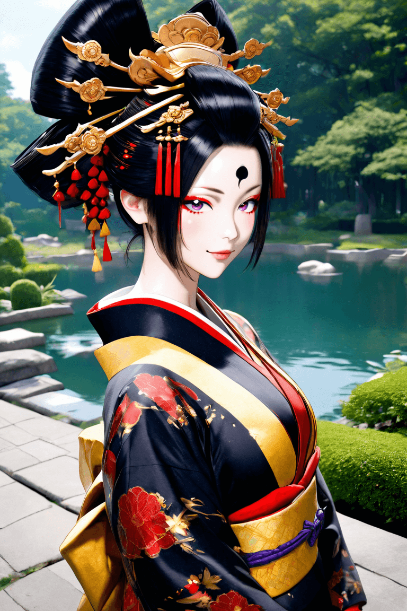
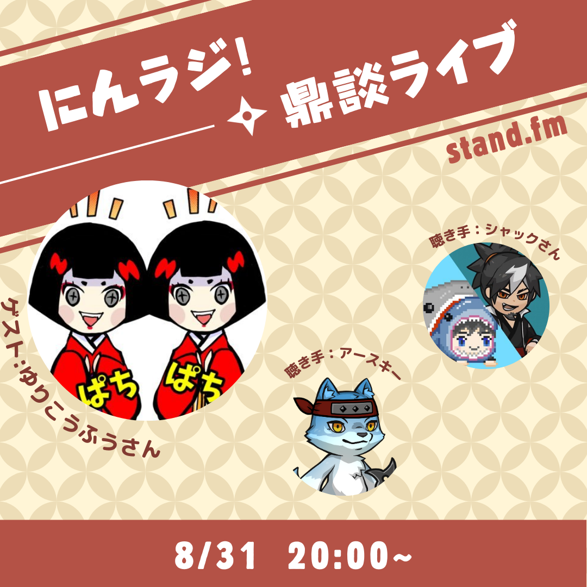
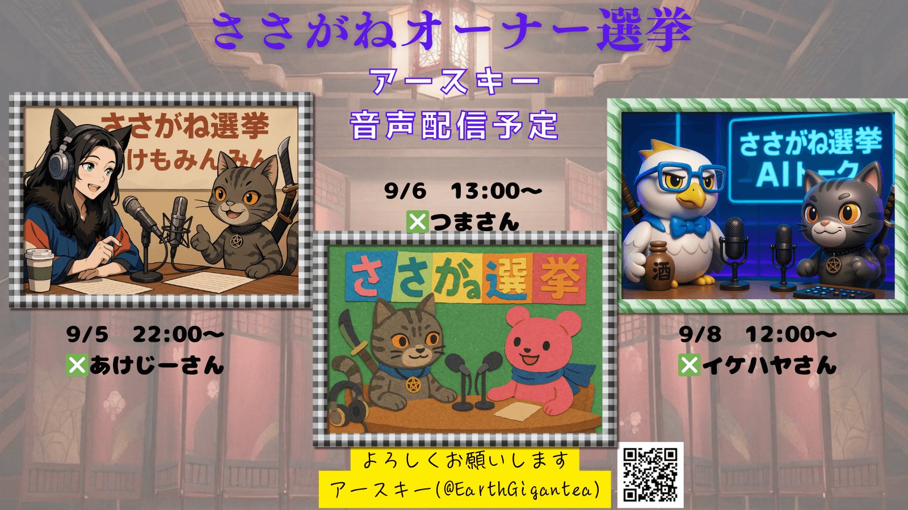

制作者アースキーについて
NinjaDAOの様々なイベントを、AIを活用して後方支援しています。物語の熱量を可視化し、創作と発信をつなげる活動を展開中。
声明文
「立候補はゴールではなく、仲間との新しい物語の始まり。想いを形にし、支え合いながら未来を紡ぐ──その一歩が、 きっと次の誰かの希望になると信じています✨」
作品集（AIart・MV・掛け合い）
アースキーのささがね選挙 出演番組


-
にんラジ ニュース（2025/08/31〈日〉 20:00〜）
ゲスト：ゆりこうふうさん 聴手：シャックさん — 禿（かむろ）を愛し、NinjaDAOを深く知る者たちと語る特別回。
-
対談 “ツマさん”（2025/09/06〈土〉 13:00〜）
ツマさんと、作品の裏側と世界観について語る対談。
-
イズナ オーナー “あけじーさん”（2025/09/05〈金〉 22:00〜）
創作の視点から「ささがね」の魅力と選挙の背景を語るセッション。
-
結 オーナー “イケハヤさん”（2025/09/08〈月〉 12:00〜）
Web3とDAOの今と未来、そして選挙の意義を“昼のスペース”で深掘り。
※各URLは収録・配信後にアーカイブへ差し替えます。
今後の流れ
-
9月5日(金) 12:00
投票 開始 -
9月7日(日) 23:59
CNGT申請 締切投票に必要なCNGTの申請締切
-
9月17日(水) 23:59
投票 締切 & 集計 -
9月20日(土)
当選者発表 @ にんセレにんセレ会場にて、オーナーを発表！当日はライブ配信予定です。